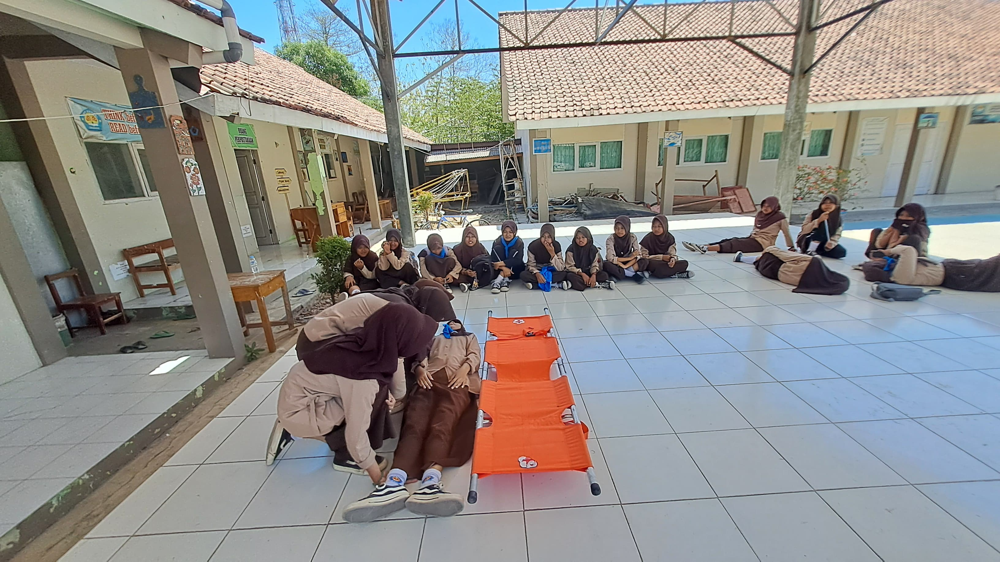
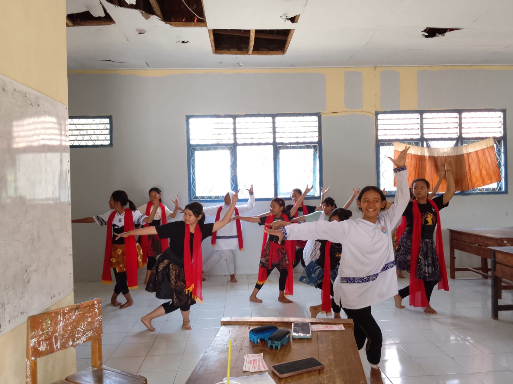
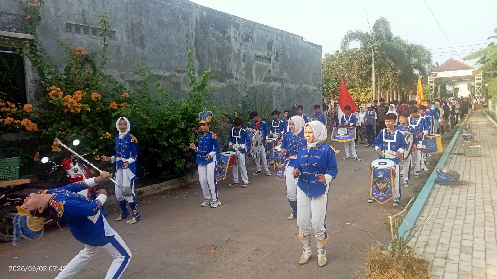

Ekstrakurikuler
SMP Negeri 2 Ciledug menyediakan berbagai kegiatan ekstrakurikuler untuk mengembangkan bakat, minat, kreativitas, keterampilan, dan karakter peserta didik.

Pramuka
Kegiatan yang bertujuan membentuk kedisiplinan, kemandirian, kerja sama, dan kepemimpinan peserta didik.
Lihat Selengkapnya.jpeg)
Paskibra
Kegiatan yang melatih kedisiplinan, ketangkasan, tanggung jawab, kerja sama, dan jiwa kepemimpinan peserta didik.
Lihat Selengkapnya
PMR
Kegiatan yang mengajarkan kepedulian, kesehatan, pertolongan pertama, dan jiwa sosial kepada peserta didik.
Lihat Selengkapnya
Seni
Kegiatan yang mengembangkan kreativitas dan bakat peserta didik dalam bidang seni serta meningkatkan rasa percaya diri.
Lihat Selengkapnya
Marching Band
Kegiatan musik yang melatih kedisiplinan, kekompakan, kreativitas, dan kemampuan bermusik peserta didik.
Lihat Selengkapnya.jpeg)
Hadroh
Kegiatan seni musik Islami yang mengembangkan kreativitas, kekompakan, keterampilan bermusik, serta kecintaan terhadap seni dan budaya Islami.
Lihat Selengkapnya